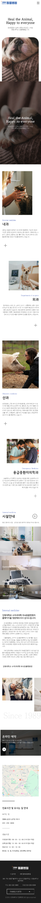
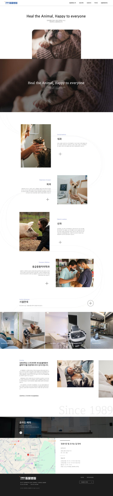
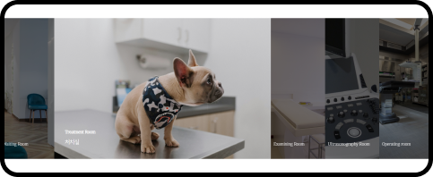

글꼴
색상
- #344EAD



Main page
홈페이지를 방문한 사람들이 편안한 느낌을 받을 수 있도록 따뜻한 느낌을 주는 의미의 문구와 사진 배치. 안심하고 맡길 수 있는 동물병원의 이미지를 주고자 하였다. 스크롤을 내리면 사진이 어두워지고 화면 전체 크기만큼 늘어남. 동시에 문구가 하얗게 변하고 사진 위로 떠오른다.
Information
반려동물만이 아닌 다양한 동물들을 진료한다는 정보를 강조하기 위해 진료과목을 가장 위에 배치. 과목명과 간단한 설명, 그 옆에 각 과의 사진을 추가하여 글을 읽지 않아도 과의 진료 가능 범위를 확인 가능.
Facility
마우스 커서를 오버하면 진료시설의 주요 이미지가 확대되며 시설의 모습을 확인 가능.
Greeting
병원장의 인사말과 치료로 건강을 되찾아가는 동물들의 이미지를 함께 보여줌으로서 홈페이지를 방문한 보호자들에게 친절하고 편안한 이미지를 심어줌.
Reservation
예약 메뉴를 중간에 배치하여 쉽게 접근할 수 있도록 함. 진료시간과 위치를 양쪽으로 크게 배치하여 병원의 운영에 대해 한눈에 알아볼 수 있도록 함.